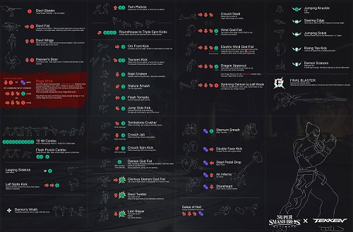
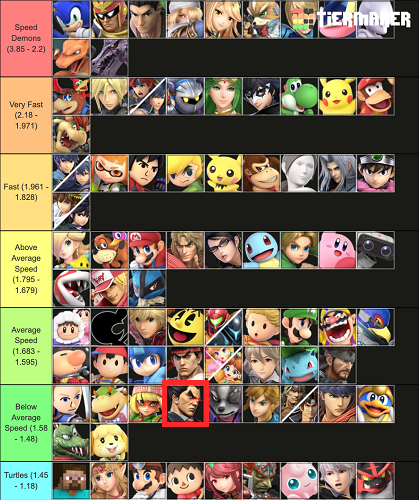
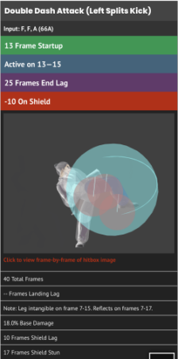
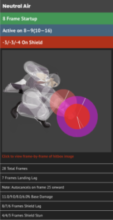
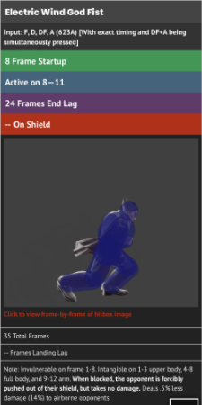
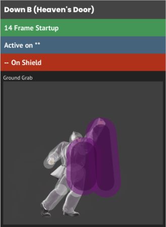
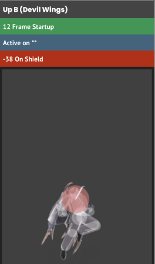

Kazuya is a character who originates from the Tekken franchise. The version of Kazuya present in Super Smash Bros. Ultimate is taken from Tekken 7.
While it may seem like Kazuya having nearly 40 unique attacks would make him a very overpowered character, in his source material, he and all of the other Tekken 7
cast members have around 100 moves. With this in mind, it is easy to tell that Kazuya's moveset was clearly nerfed even before his release.
On top of the fact that Kazuya was nerfed from his source material, a large number of his moves require command inputs which are not a native mechanic to the Smash franchise.
The strongest moves in Kazuya's kit require practice to master as they are locked behind command inputs, similar to how Terry is unable to use his GO! moves without learning
their inputs.

While Kazuya does have many desireable stats, one attribute in which he is lacking is his movement speed.
Kazuya is rated number 68 out of 89 playable characters in smash.
Speed in Smash is very important for characters to be able to approach. Kazuya struggles to get in,
has one projectile which freezes him in place for IDK yet, and does not have the advantage of range
or disjointed hitboxes like other slow characters such as Byleth.
| Tool | Reasoning |
|  | Useful for countering camping zoners |
 | Helps with slow startup on smash attacks |
|  | Improves Kazuya's ability to edgeguard |
|  | The intangibility on multiple moves helps Kazuya to approach |
|  | Source of significant damage |
All images taken from
UltimateFrameData
While Kazuya does have a reflector, armor on multiple attacks, a spike, intangibility on multiple moves,
and a command grab, he is still not overpowered due to his lack of a counter. The fact that he is lacking a
counter is more than enough to keep him balanced. All of his other tools are not excessive either has he needs
all of them. Joker has a very effective counter as it is able to both reflect projectiles and counter melee
attacks at the same time while Kazuya only has a reflecter which is stuck to a command input.

Kazuya's recovery is poor because of slow startup and the small hitbox. Both of these factors make
Kazuya very easy to edgeguard which justifies the fact that he is not put into a helpless state after
using his up B.